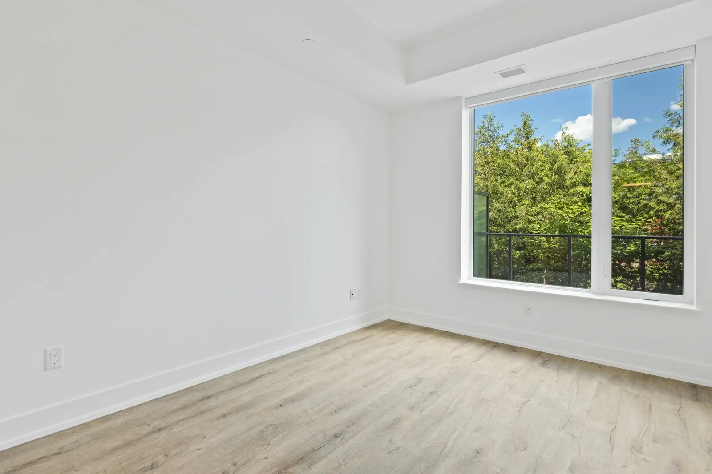
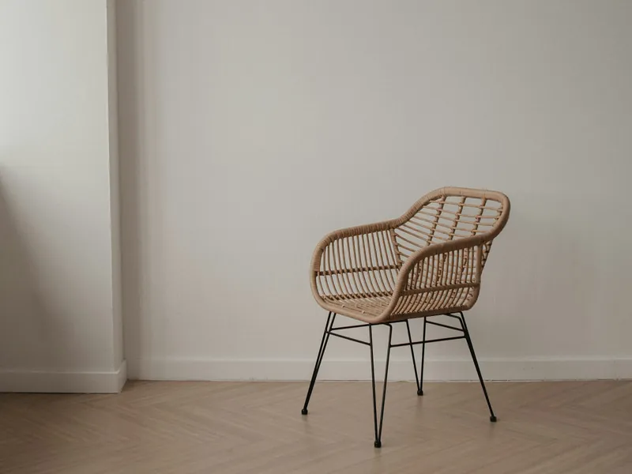
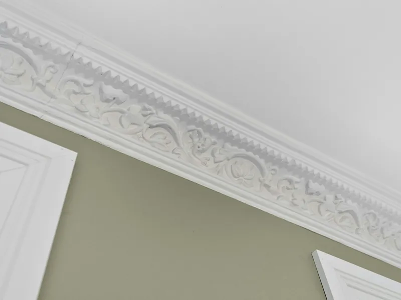
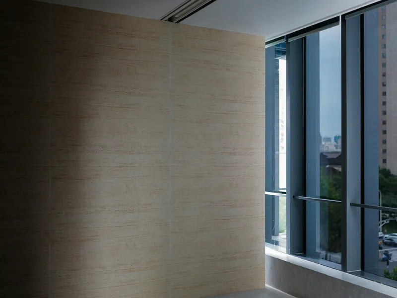
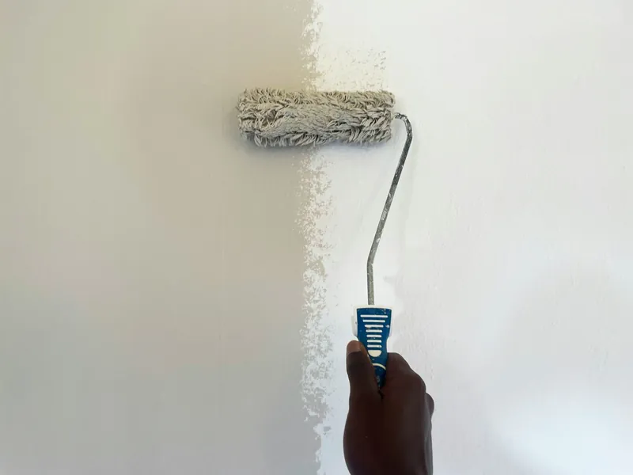

- Home
- Wand en plafond
Strakke wanden en plafonds, klaar om in te richten
Stucwerk, sierlijsten, Spachtelputz, schilderen of spuiten. Afgewerkt naar uw wens.
Er is altijd een afwerking die bij u past
Wanden kunt u tegenwoordig op verschillende manieren verfraaien. Wij weten hoe we ze op de juiste en mooiste manier afwerken.

01Stucwerk
Een uitstekende afwerking voor wanden en plafonds. Strak, rustig en klaar voor verf.

02Glad stucwerk met sierlijst
Een klassieke afwerking waarbij een sierlijst de overgang van wand naar plafond accentueert.

03Spachtelputz
Een afwerking met structuur, voor wie de wand meer karakter wil geven.

04Schilderen of spuiten
Wij schilderen of spuiten uw wanden, zodat de ruimte meteen klaar is.
Eerst de wand, dan de vloer
Een mooie afwerking van wanden en plafond bepaalt de uitstraling van uw woning. Omdat wij ook vloeren, raambekleding en zonwering doen, sluit alles op elkaar aan.
- Eén aanspreekpunt voor alles
- Vrijblijvend inmeten bij u thuis
- Uitsluitend bekende merken
Een fijn bedrijf om mee samen te werken. Van Dinther heeft bij ons een mooi plafond en een PVC-vloer gerealiseerd. Alles is netjes uitgevoerd en de ruimtes werden schoon en verzorgd achtergelaten. We zijn erg tevreden over het resultaat en de hele ervaring.
Bespreek uw wanden en plafonds
Plan een afspraak in de showroom, of laat ons vrijblijvend bij u thuis kijken en inmeten.
- Maandag
- 09.00-21.00
- Dinsdag
- 09.00-21.00
- Woensdag
- 09.00-21.00
- Donderdag
- 09.00-21.00
- Vrijdag
- 09.00-18.00
- Zaterdag
- 10.00-17.00
- Zondag
- gesloten
Uitsluitend op afspraak. De Vutter 23a, 5221 BD ’s-Hertogenbosch.